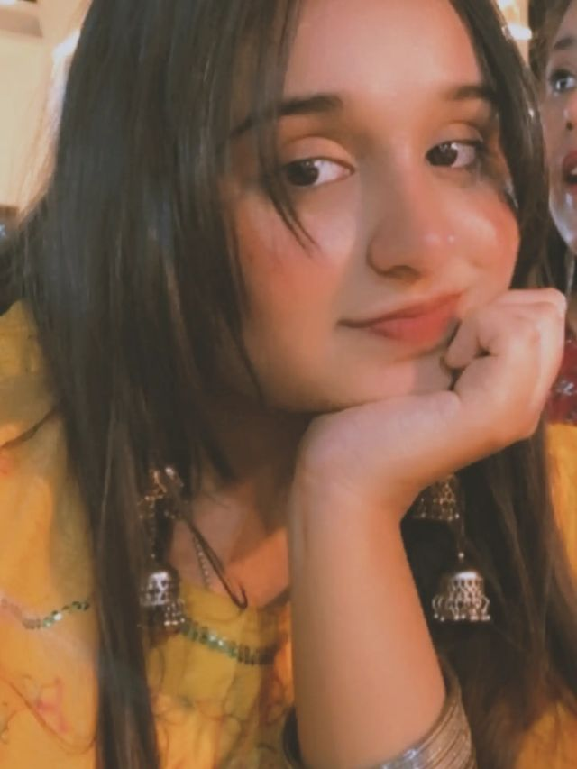

Some days are heavy.
Then one of your reels shows up,
and the whole day finds its melody.
I don’t think you know
how much your singing means to me.
Wherever I am, whatever the day,
your voice makes me smile at my screen.
Thank you for every song, Amu.
